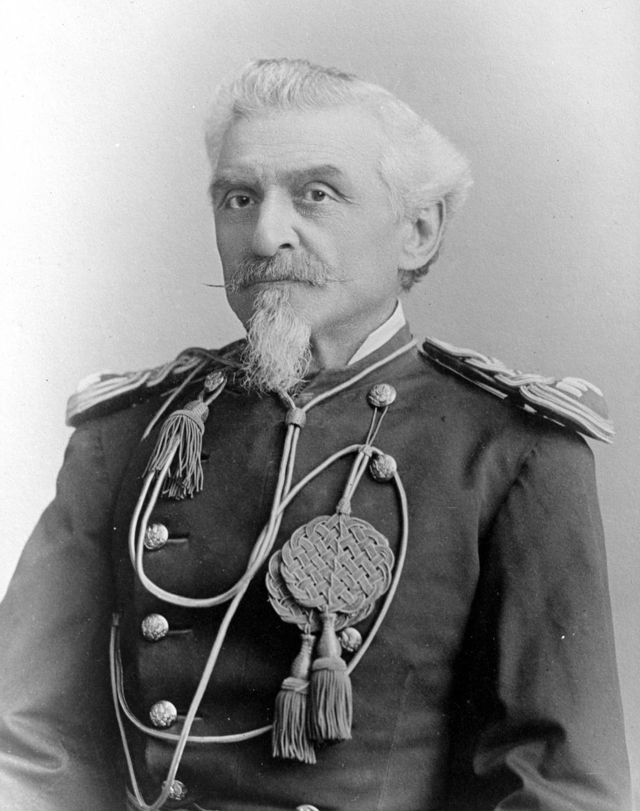
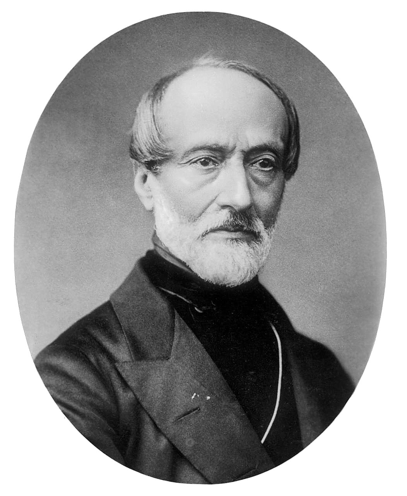
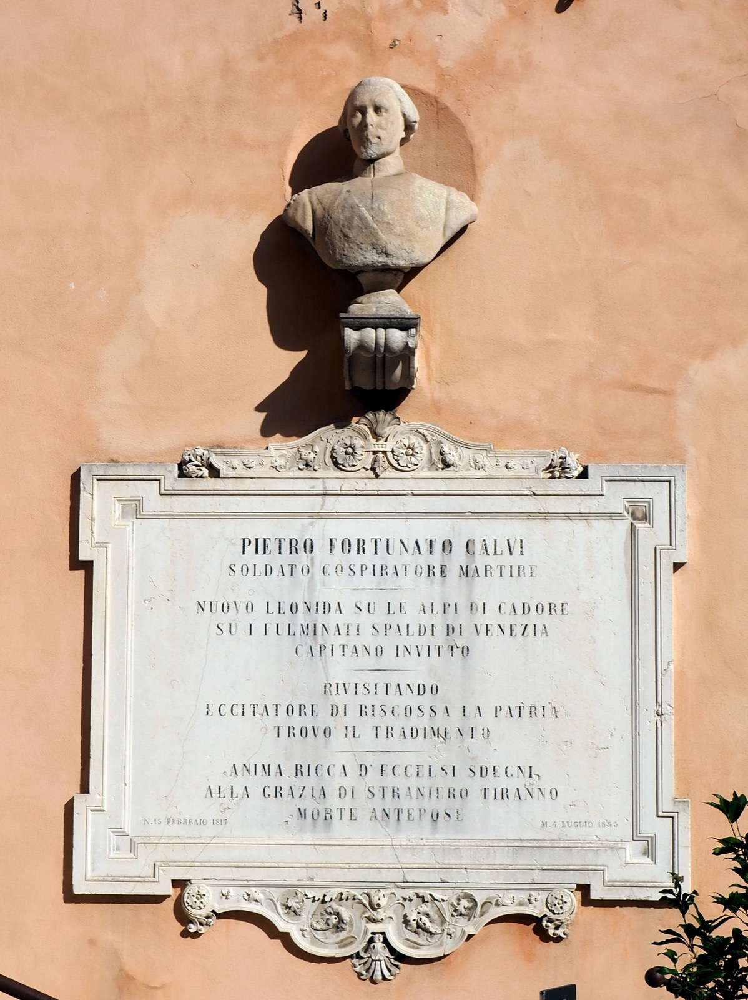
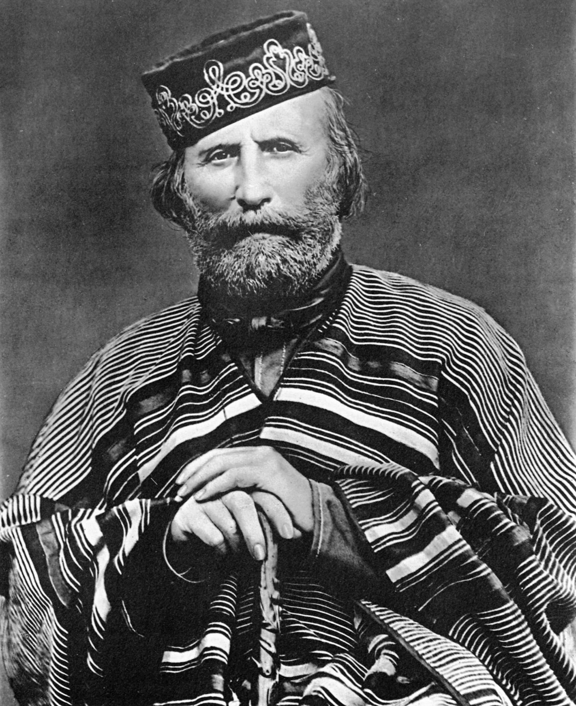
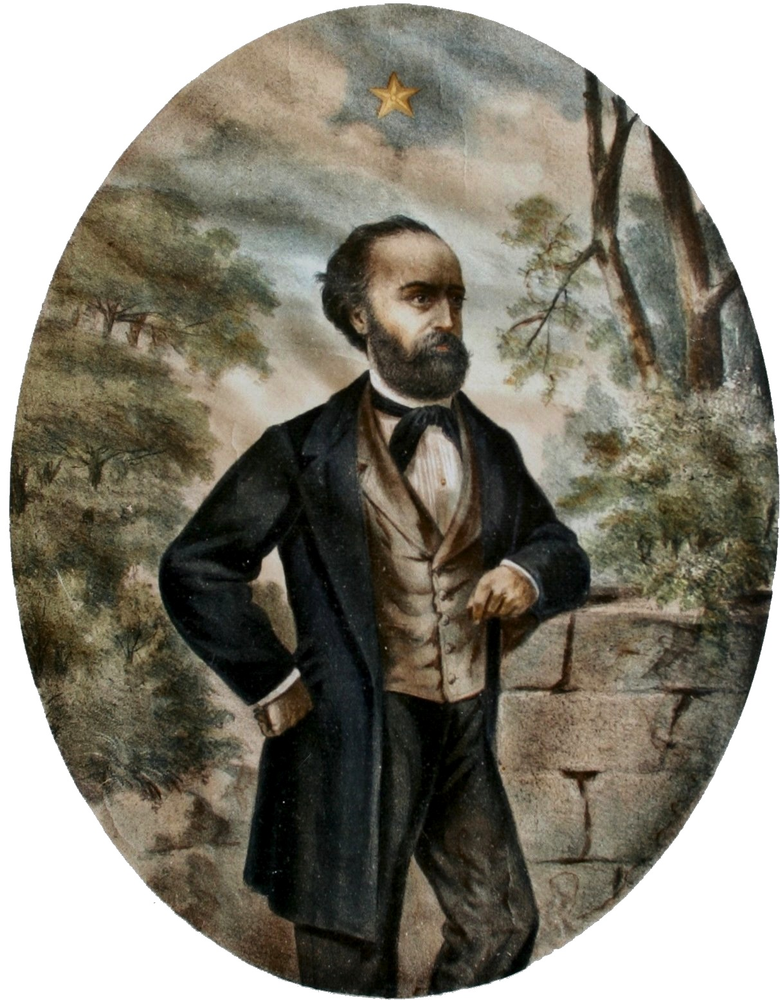
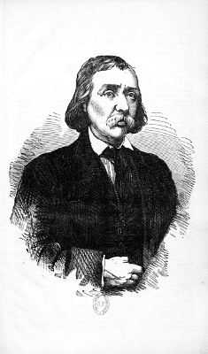
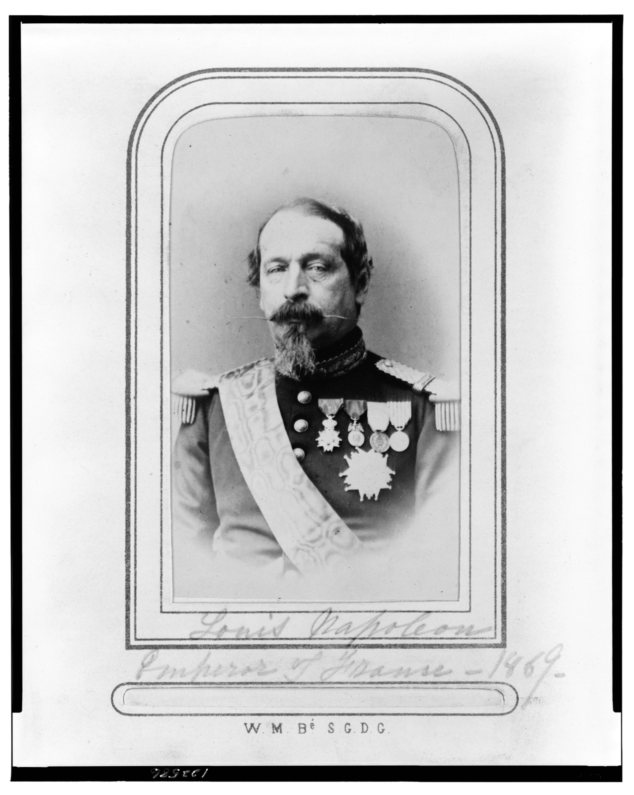
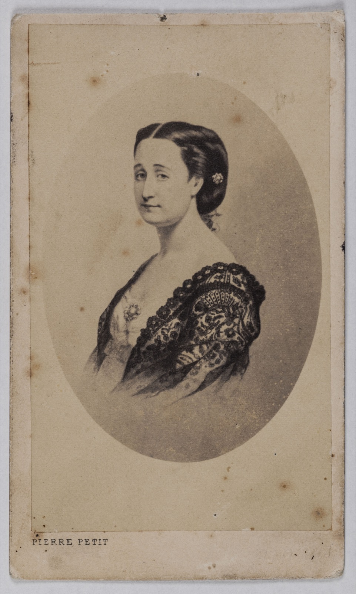

Dramatis Personae
Profiles of the figures who matter most in Per la libertà! — each one as the book draws him or her, with external biography confined to Historical note callouts (see the index). The book is a partisan memoir, so its portraits are advocacy as much as description; that is part of what they record. Chapter citations point to where a figure is most fully drawn, not to every appearance.
The Narrator and His Household
Cesare Crespi — the author (Preface; Part 1, Ch. 1)
The journalist who found di Rudio in his California exile and set down his story. Crespi is candid that he is writing advocacy, not chronicle: the book is to be a "human document" that captures "the soul of the times," and his allegiance is openly declared — "My sympathies are for those who manfully succumb." He is also scrupulous about authenticity in his own way: he secured di Rudio's written approval of every chapter and his signature on every contestable page, refusing to soften the old soldier's "lofty and virile language" because "to adulterate the word issued from lips silenced for ever… is cowardice." He foresaw the book would be posthumous: "I sensed that this book would see the light when di Rudio would be no more."
Historical note — Behind the self-effacing "reporter" of the preface stood a lifelong radical. Cesare Crespi (born near Milan in 1857, died in San Francisco on 28 November 1948) was, in the historian Kenyon Zimmer's words, "a radical republican journalist" who in the early 1880s fled to Scotland with his companion Giuseppina Alberti, passed through New York, and settled in San Francisco in 1885. There he became a fixture of the Italian-language press: he founded the weekly Il Messaggero and Secolo Nuovo (the first Italian anarchist newspaper on the U.S. West Coast), co-founded the anarchist review La Protesta Umana (1900) with Enrico Travaglio, and edited the colony's papers L'Italia, La Colonia Svizzera, and La Voce del Popolo. City directories place him at 961 Vallejo Street with his second wife, Sylvia Travaglio, in the years around the book's publication. Between 1906 and 1947 at least nine Italian-language books appeared under his name in San Francisco — from a report on the 1906 earthquake to a series of anti-fascist polemics — Per la libertà! (1913) among them; the Fascist regime kept a political-police file on him (Casellario Politico Centrale, Rome). His own creed — Mazzinian-republican, anticlerical, anti-authoritarian — is the book's creed, which is why its portrait of di Rudio reads as advocacy between kindred spirits rather than neutral transcription. His San Francisco Chronicle obituary fixes his death at 28 November 1948, at about ninety-one — which confirms the anti-fascist pamphlets through 1947 as genuinely his and corrects the FICEDL edition of Bettini's bibliography, which erroneously closes his life in 1940. The obituary names his wife Sylvia and his children, among them a daughter, Nina Lucarini; her husband, Umberto Lucarini, wrote the 1958–59 memorial profile of Crespi in La Parola del Popolo on which later accounts (Zimmer's included) ultimately draw. (Sources: Kenyon Zimmer, Immigrants Against the State, 2015; San Francisco Chronicle obituary, 28 Nov. 1948, and California Death Index 1940–1997, via GenealogyBank/FamilySearch; Leonardo Bettini, Bibliografia dell'anarchismo, FICEDL ed.; James J. Periconi Collection, Calandra Italian American Institute; Francesco Durante, Italoamericana; Crocker-Langley San Francisco directories.)
Count Carlo di Rudio — the protagonist (throughout; esp. Part 1, Ch. 1–2)

Carlo di Rudio in later life as the U.S. cavalry officer "Charles DeRudio" — photograph by D. F. Barry, c. 1870s. Wikimedia Commons (Denver Public Library); public domain. The only surviving likeness of the book's subject postdates its 1864 close.
Born at Belluno on 26 August 1832, son of Count Ercole di Rudio and Countess Elisabetta de Domini, and nicknamed in boyhood "Moretto" — "the dark one," for his complexion — a name his fellow conspirators still used in Paris in 1858. The book frames him at the close of his life: a bronze-featured old man in a small wooden house near Los Angeles, his study hung with portraits of Mazzini and Calvi. Between those two images — the boy soldier and the exiled patriarch — runs the whole arc: Roman Republic, decades of Mazzinian conspiracy, the Orsini plot, the scaffold, the penal colony, and permanent exile. He is drawn as proud, combative, unrepentantly republican and anticlerical, and incapable of the "practical" compromise he despises in others.
Historical note — In American life he was "Charles DeRudio." When the press tracked him down in 1908 he was living at 1034 South Figueroa Street, Los Angeles, where Ettore Patrizi interviewed him for Milan's Corriere della Sera — the encounter that set the book in motion (see Themes §1). His later career — the 79th New York Infantry, the U.S. 7th Cavalry, surviving the Battle of the Little Bighorn (1876), and his death at Pasadena in 1910 — lies beyond the book's 1864 close and is set out in the Timeline. (Sources: San Francisco Call, 29 Sept. 1908; Wikipedia, "Charles DeRudio".)
Signora Elisa — his wife (Part 2, Ch. 1–3; Part 1, Ch. 1)
The Englishwoman Elisa, whom di Rudio met as a language pupil in the London émigré world — she and her cousin Sara Mancherini took Italian lessons from him — and married on 9 December 1855. (The book itself never gives her surname — but di Rudio did; see the note below.) The book gives her unusual force of character: she secretly paid his rent from her savings and, the book hints, sent the anonymous parcels of food that kept him from starving, and chose for him a rose bush — the di Rudio family emblem — to recall his mother and Italy. In the California frame she appears as a "stout lady" with "a pair of blue eyes… gentle and assured," a "mouth and chin [that] revealed a creature accustomed to confronting obstacles resolutely." Their children carry the family's politics in their very names — daughters Italia, Roma, and America, and a firstborn son born in England during the conspiracy years. Through the daughter Italia's reminiscences of the Seventh Cavalry, the book's opening already glimpses the American military life its narrative never reaches.
Historical note — The book withholds her surname, but di Rudio supplied it himself: in his 1908 San Francisco Call interview he calls her "Eliza Booth, an English woman, still my companion," and the historical record confirms his wife as Eliza Booth. This settles a recurring confusion — she is not Miss Elisa Cheney, the accomplice who supplied the bombs' fulminate and testified at the trial. (Sources: San Francisco Call, 29 Sept. 1908; Wikipedia, "Charles DeRudio.")
Countess Elisabetta de Domini — his mother (Part 1, Ch. 2, 18–20)
Named only at di Rudio's birth and otherwise simply "Mamma," she anchors the book's most famous scene. On the night the Belluno conspiracy is betrayed, di Rudio — hidden in the dark — nearly fires on a figure who proves to be her. Her own great moment reaches us at one remove, through his brother Giustiniano's letters: summoned by the Austrian authorities to identify a corpse said to be her fugitive son, she looks on the livid face, gives a single sob, then lifts her veil and declares "No, this poor wretch is not my son! Carletto lives!… and he will avenge his Country!" — her "maternal majesty" shaming the officers into momentary pity.
The Masters and the Martyrs
Giuseppe Mazzini — the Maestro (Part 1, Ch. 15; Part 2, Ch. 33)

Giuseppe Mazzini — photograph, c. 1860. Wikimedia Commons; public domain.
The presiding spirit of the book and of di Rudio's life. At their first meeting in 1853, in a white villa above Lugano, di Rudio sees a man "slight, dressed in black, with a black kerchief at his throat… a high, smooth brow; pale cheeks," and is struck that, where others are told to "write as you speak," "Giuseppe Mazzini, in grave moments, spoke instead as he wrote." The book reveres him as the prophet who alone foresaw that martyrdom would redeem Italy, and who "eluded for half a century the combined police forces of all Europe." At their last meeting, a gravely ill Mazzini sends di Rudio to the American war and writes him a commendation he kept for life. Notably, di Rudio — a militant atheist — reveres the man while openly rejecting his religiosity, judging Mazzini's belief in God "a singular aberration" that "served as a picklock in the hands of his most bitter enemies." The portrait is thus both worship and argument.
Historical note — Giuseppe Mazzini (Genoa, 22 June 1805 – Pisa, 10 March 1872) founded the revolutionary society Giovine Italia (Young Italy) in 1831, dedicated to a unified Italian republic. (Sources: Britannica; Wikipedia, "Giuseppe Mazzini".)
Pietro Fortunato Calvi — the mentor and martyr (Part 1, Ch. 11, 15, 22)

Pietro Fortunato Calvi — marble portrait bust above his memorial in the Palazzo Comunale, Padua (inscribed "soldato, cospiratore, martire"). Photo: Threecharlie, Wikimedia Commons, CC BY-SA 4.0. No period likeness circulates freely; a contemporary portrait relief (Pasquale Miglioretti, c. 1872) is held at the Palazzo Ducale, Mantua. The 1887 engraving of the Belfiore martyrs in which he is one of the condemned is in Event Context §5.
The officer who first commissioned di Rudio as a secret agent and whose watchword — "Let the arms do their duty; the mind keeps watch and will do its own!" — frames the conspiratorial chapters. The book makes his death its moral high-water mark: captured carrying his commission as general-in-chief, he refused to beg for the clemency Austria granted only to those who sought it in humiliating, repentant terms, and went to the gallows with studied composure — handing his still-lit cigar to a guard, declining help up the plank, and declaring "I am ready!" Crespi laments that official slander and partisan cliques diminished his memory.
Historical note — Pietro Fortunato Calvi was hanged at Mantua on 4 July 1855, the last of the Belfiore martyrs executed by Austria. (Sources: Wikipedia, "Belfiore martyrs"; ExecutedToday.)
Giuseppe Garibaldi — the soldier (Part 1, Ch. 6–7; Part 2, Ch. 31)

Giuseppe Garibaldi — photograph by Fratelli Alinari, c. 1866. Wikimedia Commons; public domain.
Present at the book's two poles. In 1849 di Rudio fights under him in the defense of Rome — at Velletri his band of youths rescues Garibaldi, earning "a fatherly cheek-pinch" — and the book treats him as the embodiment of selfless valor. Years later his wounding at Aspromonte is the betrayal that rouses di Rudio from his torpor; the book calls him "the leader of the Thousand" and renders his fall in near-sacred terms.
Historical note — Giuseppe Garibaldi (4 July 1807 – 2 June 1882) led the defense of the Roman Republic in 1849 and the Expedition of the Thousand in 1860; he was wounded in the foot by royal troops at Aspromonte in August 1862. (Source: Wikipedia, "Giuseppe Garibaldi".)
Don Bastiano Barozzi — the patriot priest (Part 1, Ch. 11, 18–19, 22)
di Rudio's old teacher, a refugee priest who reconnects him with Calvi and the cause, then — like di Rudio's father — pleads with him to abandon the doomed Alpine conspiracy and spare his family. He is arrested when the plot collapses. He stands in the book for the strain of the Risorgimento that was both devout and revolutionary, a counter-image to the anticlericalism di Rudio professes elsewhere.
The Conspiracy of 1858
Felice Orsini — the chief (Part 2, Ch. 5–10, 16)

Felice Orsini — period engraved portrait, 19th c. Wikimedia Commons; public domain.
The book's most searching portrait, and an ambivalent one. Orsini recruits di Rudio for the attempt on Napoleon III, and di Rudio renders him as a man "capable, in the highest degree, of generous impulses," yet ruined as a conspirator by "an overflowing imagination" and a fatal carelessness — he preserved the very correspondence he urged others to burn, bought a general's uniform before one venture, and rode conspicuously through Paris before the attempt, so that "the essential gifts of the conspirator were conspicuous in him by their complete absence." And yet di Rudio insists on his greatness: the lonely courage of drying mercury fulminate by the fire "with a watch in one hand and a thermometer in the other," and above all his refusal to betray the conspiracy's network to buy his own life — "an austere greatness, worthy of an ancient Roman." That selflessness had a last word: by di Rudio's account, when he was pulled from the execution line at the foot of the scaffold and spared, Orsini — about to die — said to him only, "Better two than three." (Source: San Francisco Call, 29 Sept. 1908.)
Historical note — Felice Orsini, a former Carbonaro, led the bomb attack on Napoleon III outside the Paris Opéra on 14 January 1858 and was guillotined in Paris on 13 March 1858. (Sources: Wikipedia, "Felice Orsini"; "Orsini affair".)
Giuseppe Pieri — the Lucchese (Part 2, Ch. 8–9)
A co-executor of the plot whom the book sets out to rehabilitate: "contrary to the majority of civilized men, who have polished the surface while rotting within, he had nothing of the vulgar about him save the surface alone." di Rudio paints him as candid to a fault, a self-taught philosopher and outspoken atheist, holding unorthodox views on love and marriage (separated from his wife yet esteeming her as a friend). That same indiscretion — boasting in Brussels that he meant to repay his persecutors "a misura di carbone" — helped doom the plot, a failing di Rudio records without erasing the man's sincerity.
Historical note — Giuseppe Pieri was condemned with Orsini and di Rudio and guillotined in Paris on 13 March 1858. (Source: Wikipedia, "Orsini affair".)
Antonio Gomez — the fourth man (Part 2, Ch. 7, 10–13)
Orsini's servant, and the man di Rudio first meets at Orsini's Paris lodgings under the name "the false Allsop." He threw the first bomb prematurely and, under interrogation, let slip the acquaintance that unraveled di Rudio's false identity — and briefly tried to claim Orsini had snatched and thrown his bomb for him. The book treats him as the weak link of the four.
Historical note — Of the four tried, Gomez alone escaped the death sentence; he was condemned to hard labor for life. The "Allsop" name is not invented: a real Englishman, Thomas Allsop, was a central backer of the plot — he arranged the manufacture of the bombs in Birmingham and supplied a British passport — and escaped to America after the attack. The passport he furnished is the likely source of di Rudio's "false Allsop." (Source: Wikipedia, "Orsini affair".)
Simon Bernard — the London broker (Part 2, Ch. 5–6, 28–29)

Dr. Simon François Bernard, who directed the plot from London and was tried and acquitted there in 1858 — engraving, 1858. Bibliothèque nationale de France (via Wikimedia Commons); public domain.
The French émigré physician who organized the plot from the safety of London and, in the book's bitter account, then slandered di Rudio after the escape as a man who had bought his freedom by informing — a calumny di Rudio spent years refuting.
Historical note — Simon François Bernard was tried in London in 1858 for his part in the conspiracy and acquitted by the jury, against the judge's summing-up, with Edwin James for the defense — a celebrated case that strained Anglo-French relations. (Source: Wikipedia, "Simon François Bernard".)
Baron di Torocfalda — the bomb-maker (Part 2, Ch. 6, 29)
In the book, the inventor of the fulminate "hedgehog" bombs (named as Baron Egassy di Torocfalda), who later died destitute in a Birmingham hospital before disclosing his explosive's formula.
Historical note — The Orsini bombs were manufactured in Birmingham; the precise identity of their designer is treated variously across sources, and the "Torocfalda" name here is the memoir's own. (Source: Wikipedia, "Orsini affair".)
The Adversaries
Napoleon III (Luigi Napoleone) — the usurper (Part 1, Ch. 5, 23)

Napoleon III, Emperor of the French — photograph by Pierre-Louis Pierson, 1869. Library of Congress (via Wikimedia Commons); public domain.
The book's chief villain, and the most polemical of its portraits. di Rudio calls him "a man fatal to Liberty," tracing a career of treachery from the suspicious early death of his elder brother, through the failed Strasbourg and Boulogne attempts and the prison of Ham, to the bargain with Princess Belgioioso (Italian liberty in exchange for liberal support) that he then betrayed — sending Oudinot's army to crush the Roman Republic and restore the Pope. This is advocacy, and the book half-admits it: even di Rudio reports that "the majority of historians… assert simply that Napoleone Luigi died of measles."
Historical note — Louis-Napoléon Bonaparte was elected President of the French Republic on 10 December 1848, made himself Emperor as Napoleon III on 2 December 1852, and was deposed on 4 September 1870 after the Franco-Prussian War, dying in England in 1873. The story that he murdered his brother is not supported by the historical record. (Sources: Britannica; Wikipedia, "Napoleon III".)
Empress Eugénie (Part 2, Ch. 19–20)

Empress Eugénie de Montijo — photograph by Pierre Petit. Musée Carnavalet / Paris Musées (via Wikimedia Commons); CC0 (public domain).
Appears at the book's hinge: a petition circulated by the London Times and pressed on the Empress through the British ambassador — with Queen Victoria's authorization — secures her intercession, and her grace, granted (in the book's telling) on the imperial prince's second birthday, commutes di Rudio's death sentence at the very foot of the scaffold.
Historical note — Eugénie de Montijo (Granada, 1826 – Madrid, 1920) married Napoleon III in January 1853 and was Empress of the French until his deposition in 1870, serving three times as regent and exercising real influence on policy. (Sources: Britannica; Wikipedia, "Eugénie de Montijo".)